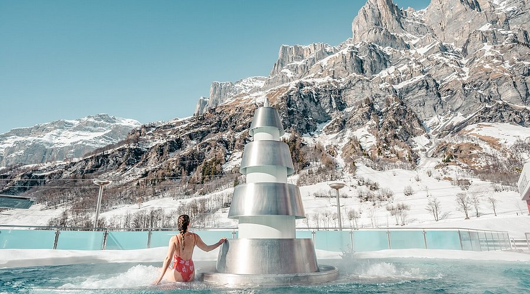
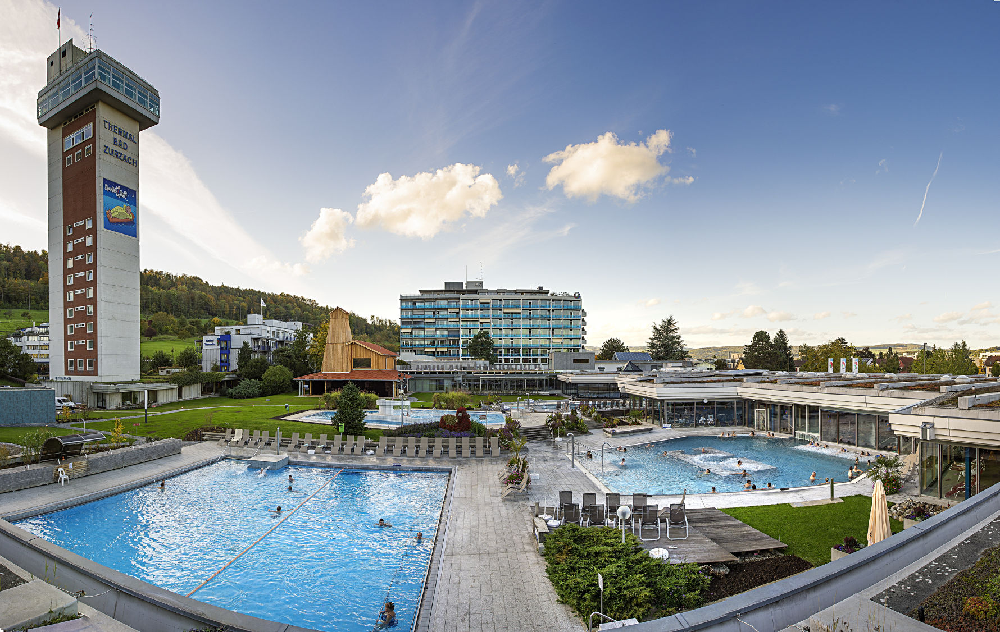
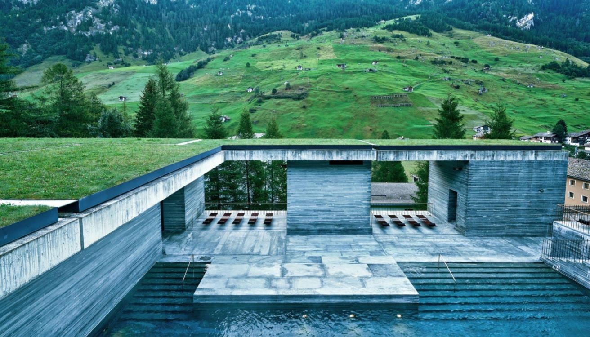
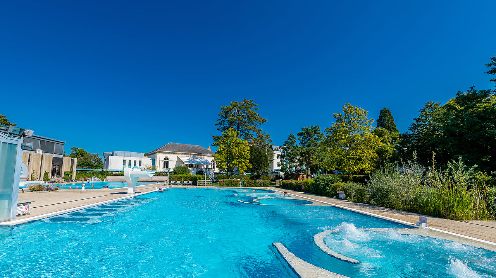

Switzerland has a long tradition of wellness and spa culture rooted in its thermal springs, mountain air, and commitment to quality living. From luxurious Grand Hotel spas to natural outdoor thermal pools with Alpine views, Switzerland offers some of Europe's most rejuvenating wellness experiences.
Top Thermal Baths

Leukerbad (Loèche-les-Bains)
Europe's largest Alpine thermal spa resort. Hot springs reach 51°C and fill indoor and outdoor pools. The outdoor pools with mountain panoramas are absolutely spectacular.

Zurzach Thermalbad
One of Switzerland's oldest thermal spa towns with natural hot springs. The modern therme complex includes indoor and outdoor pools, saunas, and steam rooms.

Vals (Therme Vals)
An architectural masterpiece by Peter Zumthor, carved into the mountainside from local Valser quartzite stone. One of the world's most beautiful spa buildings.

Scuol (Engadin)
A historic spa town in Graubünden with multiple mineral springs. The underground Bogn Engiadina spa complex offers Roman-Irish baths and Engadin-style wellness treatments.

Bad Ragaz
A world-renowned spa resort in canton St. Gallen with natural thermal springs at 36.5°C. The Grand Resort Bad Ragaz is one of Switzerland's finest wellness destinations.

Yverdon-les-Bains
French-speaking Switzerland's spa capital on Lake Neuchâtel. The thermal waters are rich in sulphur and magnesium and have been used for healing since Roman times.
Alpine Wellness
Beyond spa facilities, Switzerland itself is a wellness destination. The clean mountain air at altitude (ionised, low pollution) is deeply beneficial for respiratory health and sleep quality. Glacier walks, forest bathing (Waldbaden), and simply sitting in a mountain meadow surrounded by wildflowers are proven stress reducers. Many Swiss hotels and resorts offer tailored wellness programmes combining outdoor activities with nutrition and relaxation.
Luxury Spa Hotels
| Hotel | Location | Spa Highlight |
|---|---|---|
| Victoria Jungfrau Grand Hotel | Interlaken | 13 treatment rooms, indoor pool with Jungfrau views |
| Carlton Hotel | St. Moritz | Awarded alpine spa with crystal-clear mountain water |
| Grand Resort Bad Ragaz | Bad Ragaz | World's best thermal spa resort; direct access to springs |
| Bürgenstock Resort | Bürgenstock (Lake Lucerne) | Iconic outdoor pool hanging over the lake at 500m above water |
| Chenot Palace Weggis | Lake Lucerne | Medical wellness detox programmes |